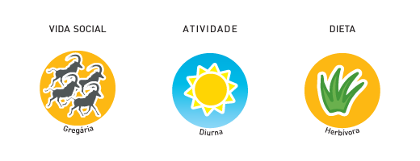
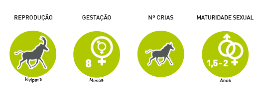

Kob
Kobus ellipsiprymnus defassa
Order: artiodactyls
Family: bovinae
Characteristics

Subspecies waterbucks having a uniformly white-colored patch on the rump.
Lifestyle

An adult male establishes the area, which guards against other males.
Breeding

Immediately after the birth of the calf is concealed in vegetation for two weeks.
Nesting site

Wetlands and dry steppes.
Protection

Threats: Illegal hunting and habitat degradation.